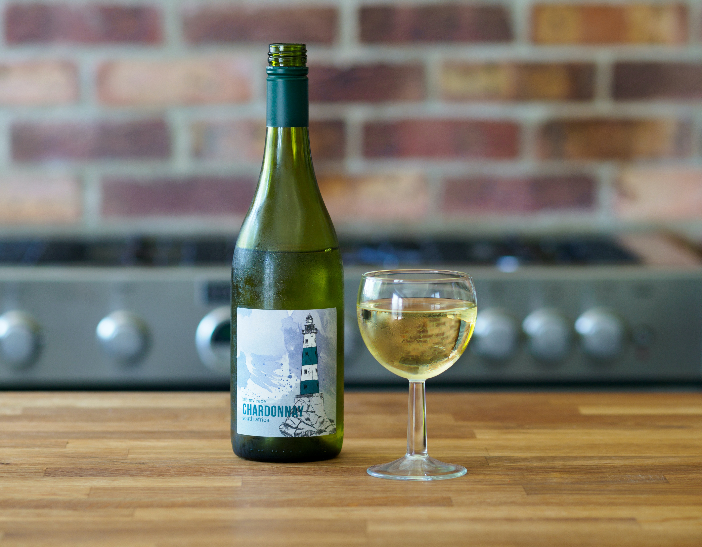

Cabernet Sauvignon, often referred to as the "king of red wines," is one of the most renowned and beloved grape varieties in the world of winemaking. This grape variety has a rich history, a distinctive flavor profile, and a versatility that has made it a favorite among wine enthusiasts for centuries

Merlot is a renowned red wine grape variety that has gained popularity worldwide for its approachable and versatile nature. This grape variety has a rich history and plays a significant role in the world of winemaking. Here, we'll explore the characteristics, origins, and cultural significance of Merlot wine

Chardonnay, often referred to as the "queen of white wines," is one of the most iconic and versatile grape varieties in the world of wine. Originating in the Burgundy region of France, Chardonnay has traveled across the globe, adapting to various climates and winemaking styles to produce an array of captivating wines